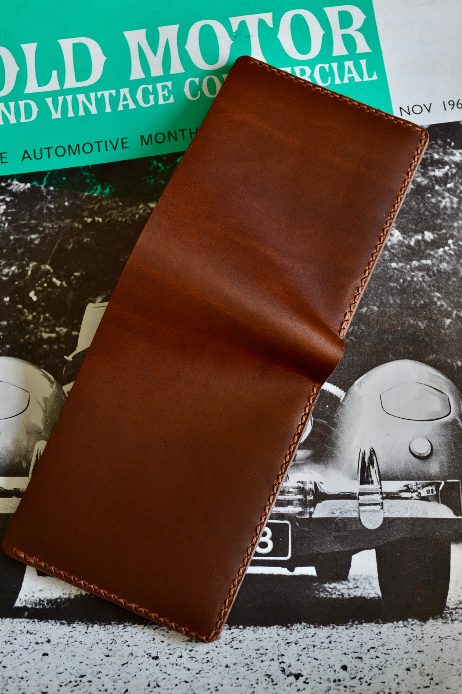
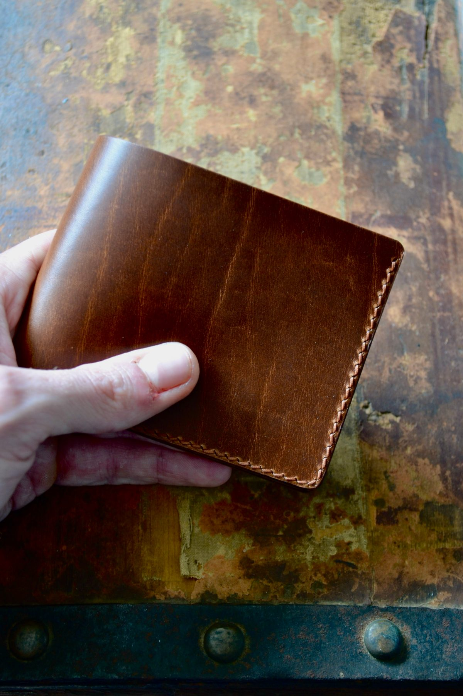
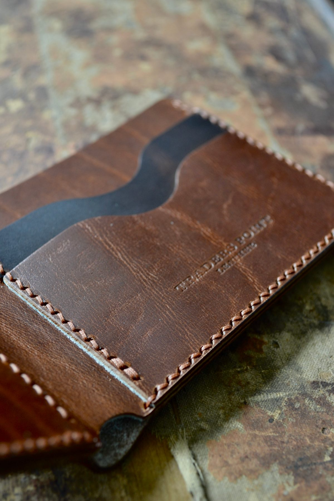
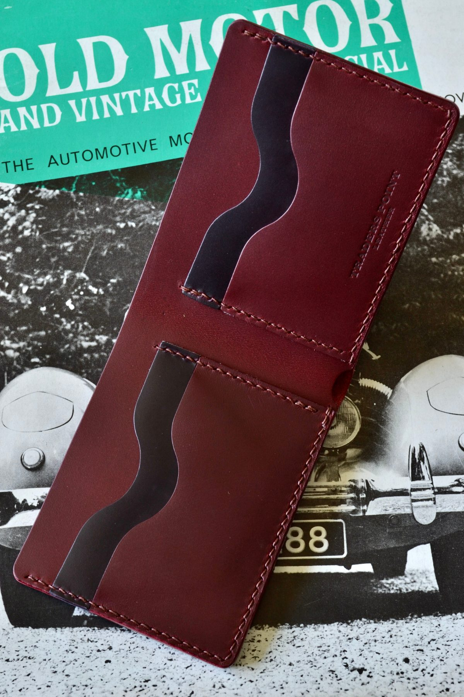

Design Your Wallet
The body and every pocket are cut separately, so each one can be its own leather. Choose yours, and we'll build it.
The body and every pocket are cut separately, so each one can be its own leather. Choose yours, and we'll build it.
Your Build
Everything we need to cut your wallet — sent straight to the bench.
The Real Thing



